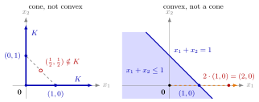

Cone¶
Definition¶
Let be a nonempty set. is a cone if
Some books ask this only for , so that a cone need not contain . In this course is allowed, so every cone contains the zero vector.
Interpretation¶
A cone is a set that, together with any of its points, contains the whole half-line that starts at the origin and runs through that point. Zooming in or out around the origin does not change the set.

The left panel shows Example 2 below: every point of lies on one of the two blue half-lines and the whole half-line stays in , so is a cone, but the midpoint of and is missing, so is not convex. The right panel is the halfspace of Example 3 below: it is convex, but the half-line from through (dashed) leaves it, since has . Its boundary misses the origin, and that is why scaling fails.
Taking shows , so is the smallest cone and the largest. Every cone is a union of half-lines with , and any union of such half-lines (with ) is a cone. The definition only involves scalar multiplication by nonnegative numbers; it says nothing about adding points. A cone therefore need not be convex: two half-lines in different directions form a cone, but the segment between points on them leaves the set (Example 2 below). Cones that are also convex are the convex cones on which the separation results for cones are built.
A subspace from Math II is a cone, because it is closed under all scalar multiples; a cone only needs the nonnegative ones. A closed halfspace with is a cone exactly when , that is, when its boundary hyperplane passes through the origin (Example 3 below).
The everyday picture of a cone, a bounded pointed solid, is misleading in two ways. A cone other than is unbounded, since runs off to infinity as grows. And the tip is always at the origin: shifting a cone away from the origin usually destroys the property.
Key Results¶
- Every cone contains : take in the definition, which is possible because is nonempty.
- A cone is unbounded: for , as .
- is a cone if and only if is a union of half-lines starting at (including the case ); unions and intersections of cones are again cones.
- A cone is convex if and only if for all (see Convex Cone).
- For , the closed halfspace is a cone if and only if ; more generally is a cone for every matrix with columns (see Polyhedral Convex Cone).
Examples¶
1. Standard cones. , , the half-line through a point , the nonnegative orthant and the sector are cones: multiplying the inequalities by keeps them valid.
2. A cone that is not convex. Let , the union of the nonnegative -axis and the nonnegative -axis. Every point of lies on one of the two half-lines, and that half-line stays in , so is a cone. But while , so is not convex.
3. Halfspaces through and away from the origin. is a cone: . The halfspace is not: belongs to it, but has . The halfspace is not a cone either, because it does not contain .
4. The convention matters. The open quadrant is closed under multiplication by every , so it is a cone in books that use . Here it is not a cone, since gives , which is missing. Adding the origin repairs this: is a cone. It is not closed, so cones need not be closed sets.
Prerequisites¶
Related Concepts¶
Sources¶
- Math VI: Convexity and Optimization · Week 2
- H. E. Nusse and M. Dienstknecht, Math VI: Convexity and Optimization, lecture notes 2026–2027, Section 2.3
Aliases: cone in R^n, conic set Keywords: \lambda\boldsymbol{x}\in K, \boldsymbol{0}\in K, closed under nonnegative scaling, union of half-lines, nonconvex cone Symbols: element of, infinity, lambda, real numbers, subset, union
Last updated: 10 November 2026 16:43
ConeConvex ConePolar ConeScalar MultiplicationZero VectorConvex Set in R^nHalfspaceFinitely Generated Convex ConePolyhedral Convex ConeNormal ConeSubspace